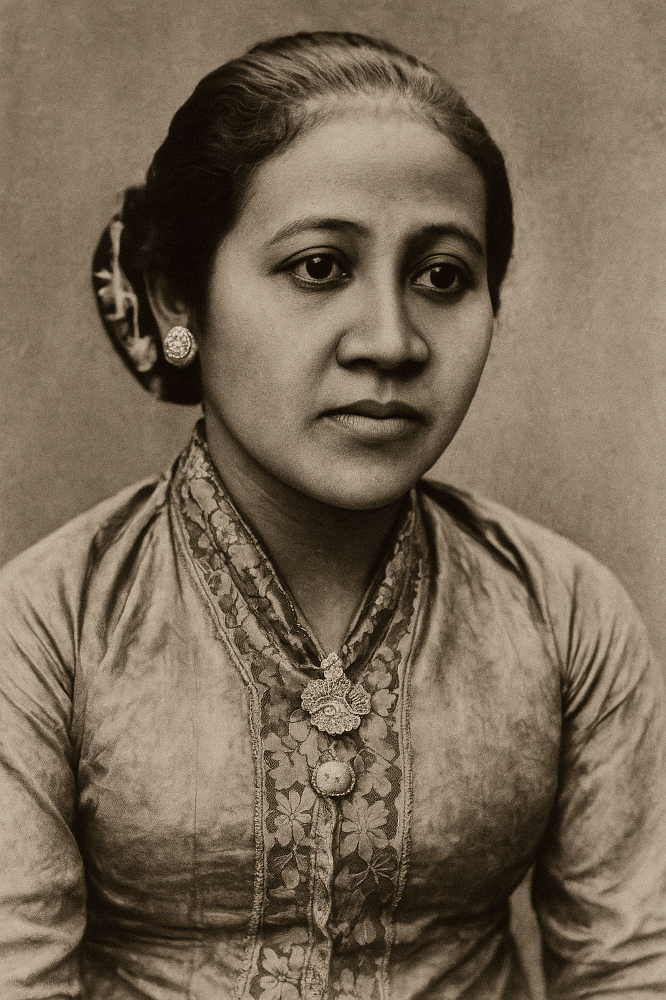

Raden Ajeng Kartini lahir pada 21 April 1879 di Jepara, Jawa Tengah. Ia adalah seorang tokoh nasional Indonesia yang sangat terkenal karena perjuangannya dalam memperjuangkan hak perempuan, terutama dalam hal pendidikan. Kartini berasal dari keluarga bangsawan, anak dari Bupati Jepara, Raden Mas Adipati Ario Sosroningrat. Namun meskipun berasal dari keluarga terhormat, Kartini sangat menyadari bahwa perempuan pada masa itu tidak memiliki banyak hak dan kebebasan, terutama dalam hal pendidikan.

Kartini kecil tidak dibolehkan untuk melanjutkan pendidikannya ke jenjang yang lebih tinggi, meskipun ia sangat ingin belajar dan mengeksplorasi pengetahuan. Pada masa itu, perempuan di Indonesia hampir tidak memiliki akses untuk mendapatkan pendidikan formal yang layak, terutama bagi perempuan Jawa. Namun, Kartini tidak menyerah pada keadaan dan terus belajar secara mandiri. Ia membaca berbagai buku dan surat kabar yang dikirim oleh teman-temannya di Belanda, yang kemudian membuka cakrawala pemikirannya. Sejak usia muda, Kartini sudah mulai memikirkan kondisi perempuan di Indonesia dan bertekad untuk memperjuangkan hak mereka.
Ia merasa bahwa pendidikan adalah kunci utama untuk membuka pintu kesetaraan bagi perempuan. Melalui surat-surat yang ditulisnya kepada sahabat-sahabatnya di Belanda, Kartini menyuarakan keprihatinannya terhadap kondisi perempuan di Indonesia yang terbelenggu oleh tradisi dan norma-norma yang mengekang. Surat-surat tersebut akhirnya dikenal dengan nama "Surat Kartini" yang diterbitkan oleh seorang teman dekatnya, J.H. Abendanon, pada tahun 1911.
Melalui surat-surat itu, Kartini menyampaikan pandangannya tentang pentingnya pendidikan untuk perempuan, yang dapat memberdayakan mereka untuk lebih mandiri dan berdaya saing. Ia juga menyuarakan keinginannya untuk melihat perempuan Indonesia merdeka dari belenggu adat yang mengekang. Pada usia yang sangat muda, tepatnya 25 tahun, Kartini meninggal dunia pada 17 September 1904 setelah melahirkan anak pertama dari pernikahannya dengan Raden Adipati Joyodiningrat. Meskipun hidupnya singkat, perjuangannya telah meninggalkan warisan yang sangat berharga bagi perjuangan perempuan di Indonesia. Setelah kematiannya, semangat Kartini untuk memperjuangkan pendidikan dan hak-hak perempuan terus menginspirasi banyak orang. Bahkan, sejak tahun 1964, pemerintah Indonesia menetapkan tanggal 21 April sebagai Hari Kartini, sebagai bentuk penghargaan terhadap jasa-jasa beliau dalam memperjuangkan emansipasi wanita di Indonesia.
Kartini berjuang untuk meningkatkan taraf hidup perempuan melalui pendidikan. Ia menulis surat-surat yang terkenal kepada sahabat-sahabatnya di Belanda tentang pentingnya pendidikan untuk wanita...
Jika Kartini hidup di zaman sekarang, mungkin dia akan merasa sangat bangga dengan perempuan-perempuan yang semakin kuat dan berani mengejar cita-cita mereka.
Perempuan kini tak hanya berjuang untuk pendidikan, tetapi juga untuk kesetaraan di berbagai bidang kehidupan. Namun, di sisi lain, masih banyak tantangan yang dihadapi perempuan, seperti stereotip dan ekspektasi sosial yang terkadang membatasi kebebasan mereka untuk memilih jalan hidup. Kartini yang hidup di akhir abad ke-19 tentu akan merasa bangga melihat perempuan Indonesia yang kini menduduki posisi penting di pemerintahan, dunia bisnis, dan ilmu pengetahuan. Meski demikian, perjuangan Kartini belum sepenuhnya selesai, karena masih ada ruang untuk kesetaraan yang lebih luas. Jika Kartini masih hidup, dia pasti akan terus mendukung setiap langkah perempuan untuk mencapai impian mereka tanpa rasa takut atau dibatasi oleh norma yang ada.